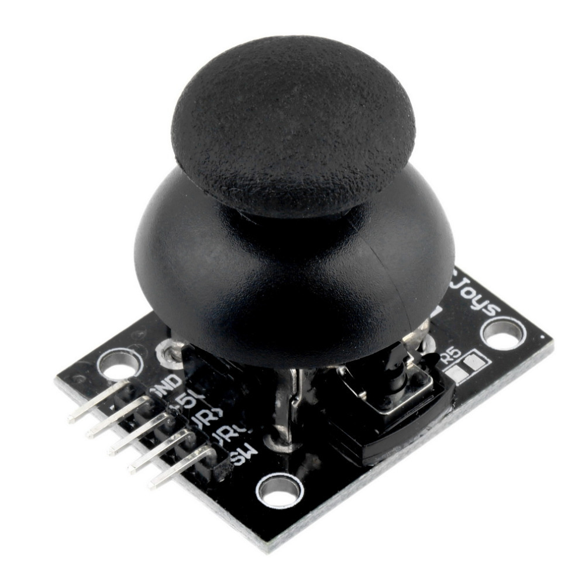
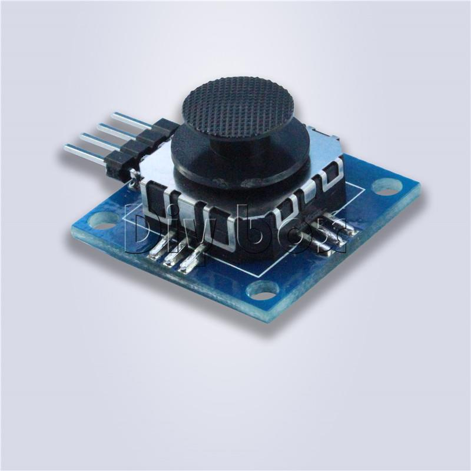
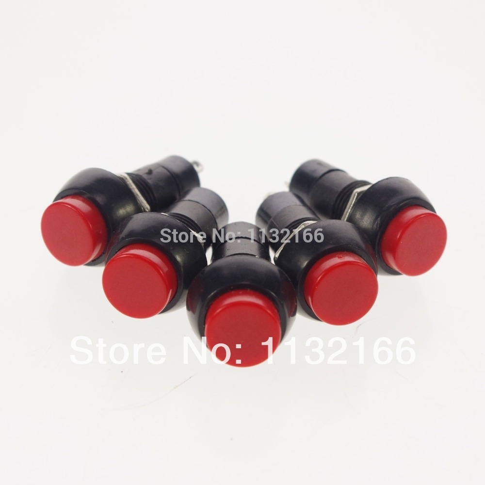
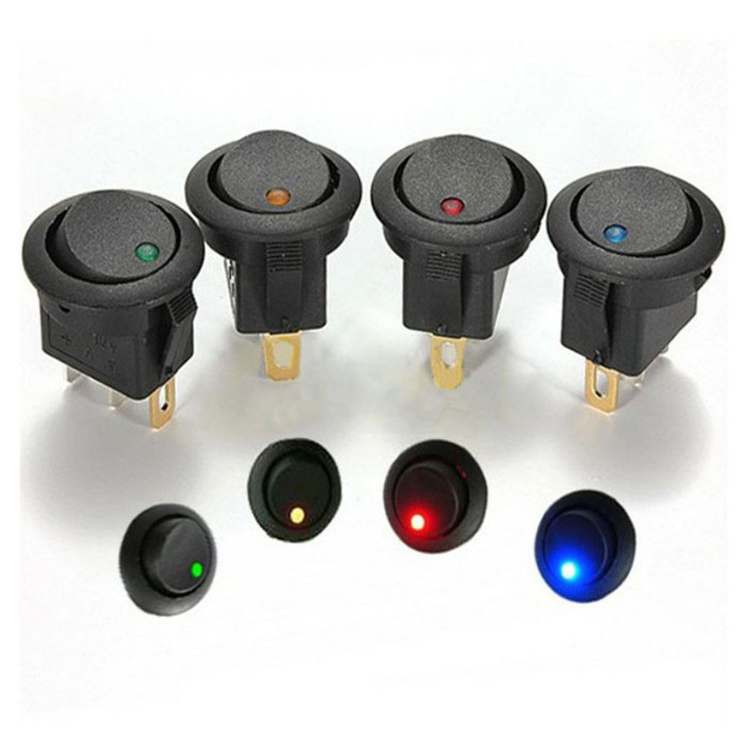
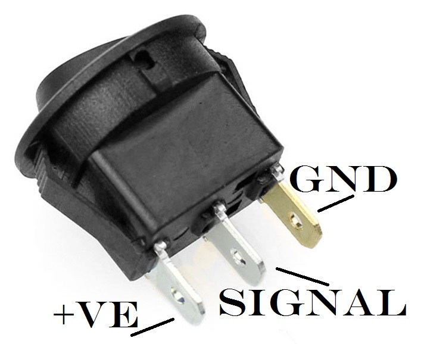
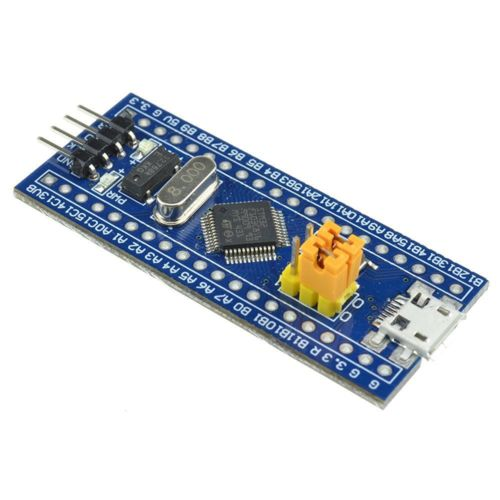

Elite Dangerous (website, Steam, wiki) is a spaceship in space game. Whilst the combat isn't overly realistic, you can enable proper newtonian physics. So you can have the full 6 Degrees of Freedom (DOF), and no dampeners on any of them.
Alas, my joystick(s) are rubbish, and cannot hold center. Wouldn't it be nice I thought to be able to trim them, like in real aircraft. Hence this project was born. I wanted a little control panel that had a few toggle switches, a few lights, a few pushbuttons, some potentiometers and slide potentiometers, and dual joysticks. Also included is a way to easily navigate menus.
So all the switches, buttons, etc that I bought are:
2 joy/thumbsticks:

1 PSP joystick. This will be used for selecting menus, etc:

16 pushbuttons:

16 light up toggle switches - 4 of each colour:


I chose to use the STM32F103C8T6 ARM Cortex-M3 micro-controller, as I have experience with this, and the STM32F429ZIT6 uC. This is a 32-bit micro-controller with 20Kbyte SRAM, 64Kybyte flash (in this development board), 10 12-bit ADC channels, and 2 I2C, 2 SPI, 3USART and an USB interface.
The development board I chose was the blue-pill version, seen below. This is available very cheaply (~$3) online (think eBay or Aliexpress). Whilst the micro-controller has 37 GPIOs, only 30 are available. Of these, 10 are ADC channels, 2 are I2C, 2 are SPI, and 2 are USB. Hence the effective number of GPIOs for buttons is only 14. Leaving SPI and I2C available allows the use of these protocols to connect to other sensors (e.g. accelerometers), or other micro-controllers (e.g. a port expander, wii-nunchuk/classic controller, or other detachable controller).
As the STM32F103C8T6 has a USB peripheral, all that needs to be done is to correctly configure it, and the device will show up as a joystick on the computer! (note: have to tell it to use the generic HID joystick device driver, as this is not automatically used on Windows 10. Linux is probably fine).
The UniCore-MX is a firmware library for a variety of ARM Cortex-M microcontrollers. It is a fork of the libopencm3 library. It is used in the ED Panel as I could not get a USB HID working in libopencm3.
UniCore-MX is best used as a git submodule. To initialise this library, follow:
- in the root directory of a git repository:
https://github.com/insane-adding-machines/unicore-mx.git code/unicore-mx, where code/unicore-mx is thelocation of the folder you want to go the library to be installed in (relative to the current folder). - Must compile UniCore-MX. Move to the code/unicore-mx folder, and type make. Note: Must have the arm-none-eabi toolchain in your PATH.
Progress so far:
- Device showing as a HID
- Analgoue input working
- Active high digital input working
- Active low digital input working
- Finalise button layout
- Wire all buttons in
- Install all buttons (and switches, joysticks, etc)
- Create external ports (Have some 2-row DB-15 connectors)
- Get I2C master working
- Get I2C slave devices working (MSP430 button/digital input slave)
- Test I2C with a Nintendo Wii Nunchuk/classic controller
- ????